Bulk Synchronization V1 Orchestration Guide
Overview
This user guide explains how you can set up a Bulk Synchronization orchestration in Aquera Admin.
In Bulk Synchronization orchestration, all modified/new user records are updated as a batch to the target application using a single PUT operation, as per the defined orchestration schedule. The user data are sent to the target system as an array of user records. The Bulk Synchronization orchestration can be configured only if the target application supports bulk/batch import of data.
The following are some of the applications that support batch import: TigerConnect, SumTotal, Flaik.
Jump to
Setting Up the Bulk Synchronization Orchestration
Creating the Orchestration
Configuration
Mapping of Attributes
Scheduling the Orchestration Run
Filtering Data
Attribute Operators
Logical Operators
Grouping Operators
Using Data Values
Setting Up the Bulk Synchronization Orchestration
This procedure describes how to set up the Bulk Synchronization orchestration. To explain the process, we consider Active Directory as the Source application and SumTotal as the Target application.
Prerequisites
Make sure that the source (Active Directory) and target (SumTotal) applications are added and configured correctly in Aquera Admin, before creating the orchestration.
Creating the Orchestration
- Log in to the Aquera Admin console.
- Navigate to Orchestrations and click Create Orchestration. The Add Orchestration pop-up window is displayed.
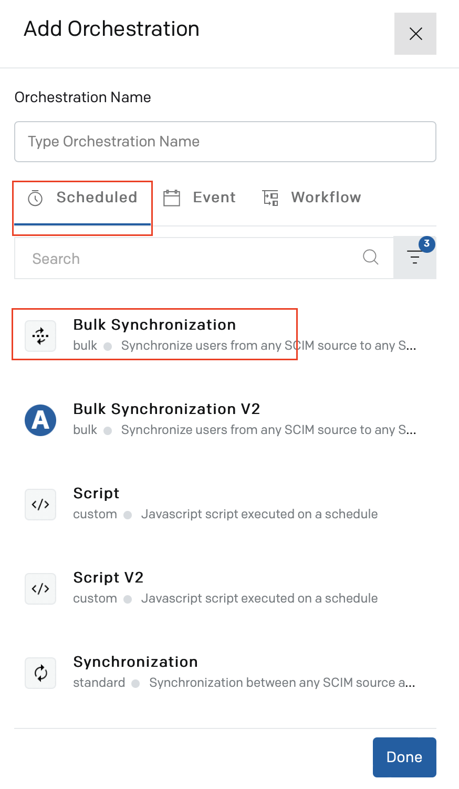
- Enter a name for the orchestration in the Orchestration Name field, for example, AD_SumTotal.
- Select Bulk Synchronization from the Scheduled tab of the pop-up window.
- Click Done. The Add Orchestration page is displayed with the various fields and tabs to configure the orchestration.
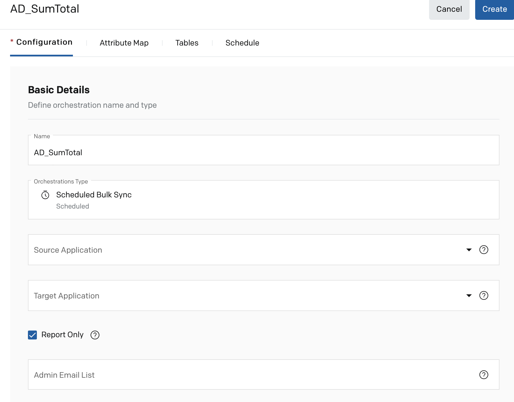
The following procedures are involved in the Bulk Synchronization orchestration setup:
- Configuration
- Mapping of Attributes
- Including Source Attribute Values Using Tables
- Scheduling the Orchestration Run
Configuration
- Enter the following details on the Configuration tab, as required:
Field Description Basic Details Source Application Select the source application from where the data of users must be retrieved. The added and modified user data are retrieved from this application as part of the orchestration.
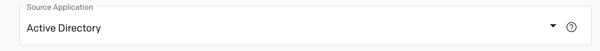
Target ApplicationSelect the target application to which the bulk (batch) data of modified users are updated as part of the orchestration. The target application must support bulk import of data.
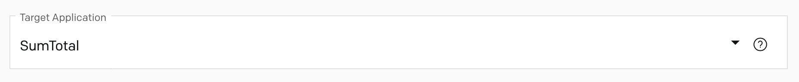
Report Only Select this checkbox to generate a report that shows the data that would be changed, without actually making those changes. This can be selected for the first instance of orchestration to identify any issues. You can clear this selection after verifying the report and confirming that the result is as expected. Admin Email List The administrative email addresses to which notifications on this orchestration have to be sent. Multiple email addresses must be separated by comma.

Incremental Mode Select this checkbox to run the orchestration in incremental mode. In this mode, the start timestamp of the last run orchestration is always captured, and the source records that have been added or modified after this timestamp will only be considered for the next orchestration. Incremental Mode Initial Timestamp The timestamp that must be considered when you run the orchestration in incremental mode for the first time. The source records that were added or modified after this timestamp will only be considered for the first incremental run of orchestration.
The timestamp has to be entered with the time zone designator (TZD) in the format,
YYYY-MM-DDThh:mm:ss.sTZDExample: 2020-06-18T08:30z, 2020-06-18T01:30-0700
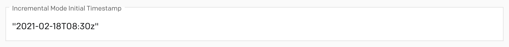
Import Limit The maximum number of user records that are allowed to be imported to the target application during a single run of the orchestration. Set this field to unlimited if you do not want to limit the number of imported records.
The limit can be set accordingly to verify and debug the source-to-target mapping condition.
Source SCIM Filter The expression that can be used for filtering the users during import, if required. This field is primarily used to verify the user data by filtering a user from the source system.
Example: CON:userName eq "bjensen@example.com"
For details on the operators and the syntax that must be used for filtering the data, refer to the Filtering Data section.
Map Manager Select this checkbox to map users' managers from source to target. The manager attributes in the user objects are used for mapping. Update Limit The maximum number of user records that are allowed to be updated in the target application during a single run of the orchestration. Set this field to unlimited if you do not want to limit the number of records. Match Expression The expression, which has to be used to identify the target record that matches a source record. This expression can be given only if the target connector supports GET operation. Creation Email Details Send New User's Manager Email Select this checkbox to send an e-mail notification to the manager when a new user is created in the target application as part of the orchestration. Creation Distribution List The email addresses to which an e-mail notification has to be sent when a new user is created in the target application as part of the orchestration. Multiple e-mail addresses must be separated by comma. Creation Email Subject The subject line to be used in the e-mail notification that will be sent when a user is created in the target application. For example, New Employee. Creation Email Body The template that has to be used for the body of the notification e-mail, which will be sent when a new user is created in the target application. The target attributes can be included in the template to add any details of the created user in the e-mail body.
For example:
name : {{name.givenName}} {{name.familyName}}email : {{emails[work].value}}
username : {{userName}}
password : {{password}}
manager: {(ENT.manager.displayName}}
department: {{IAN.userDepartment}}
Deactivation Email Details Send Deactivated User's Manager Email Select this checkbox to send an e-mail notification to the manager when a user is deactivated in the target application as part of the orchestration. Deactivation Distribution List The email addresses to which an e-mail notification has to be sent when a user is deactivated in the target application as part of the orchestration. Multiple e-mail addresses must be separated by comma. Deactivation Email Subject The subject line to be used in the e-mail notification that will be sent when a user is deactivated in the target application. For example, Deactivated Employee. Deactivation Email Body The template that has to be used for the body of the notification e-mail, which will be sent when a user is deactivated in the target application. The target attributes can be included in the template to add any details of the deactivated user in the e-mail body.
For example:
name : {{name.givenName}} {{name.familyName}}email : {{emails[work].value}}
username : {{userName}}
manager: {(ENT.manager.displayName}}
department: {{IAN.userDepartment}}
Advanced Details Phone Number Formatting The standard format to which the phone numbers of users must be converted during the orchestration process. The valid values are:
- disabled: By default, the conversion of phone numbers to a specific format is disabled.
- automatic:
- E164: The E.164 international telephone numbering format is + <country code> <subscriber number including area code>.
- INTERNATIONAL: International format
- NATIONAL,country=US: The format that is being followed in a nation. You must replace US with the appropriate country code.
Note: The automatic formatting does not work when you write to ADP. To set the international phone number format of +1-xxx-xxxxx during the orchestration, set the field value as INTERNATIONAL,template=+.-...-.......
Report Mode The logging mode of orchestration details. This setting controls the level of details to be captured in the orchestration logs. The valid values are listed below in the order based on the level of details captured in the logs:
- normal
- minimal
- verbose
- debug
You can start with the normal or minimal mode for the log details. In case you want to have a detailed analysis of what is happening in the orchestration, you can switch to the verbose or debug mode.
- Click Create to create the orchestration.
Mapping of Attributes
- Click the Attribute Map tab.
The default mapping of SCIM attributes from source to target application is displayed on the page. The source attributes are listed on the left side and the target attributes on the right side of the page.
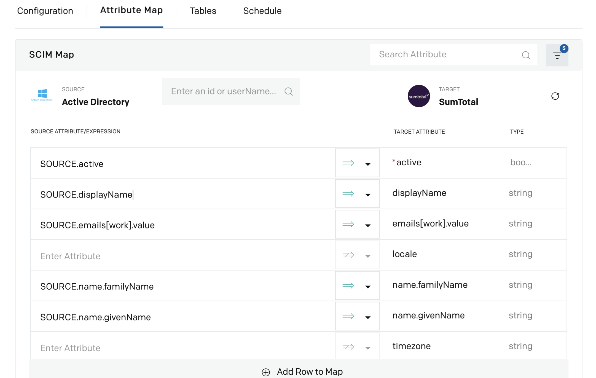
The mapping simplifies the process of executing Create, Update, and Delete operations, as the changes made to a source attribute will automatically be reflected in the mapped target attribute when the orchestration runs. The source attribute has to be edited in accordance with the target attribute.
The following actions can be performed in this tab, as per the requirements:
- Search for a user from the source application by entering the userId or userName attribute value to get a preview of the values that are mapped to the target attributes.
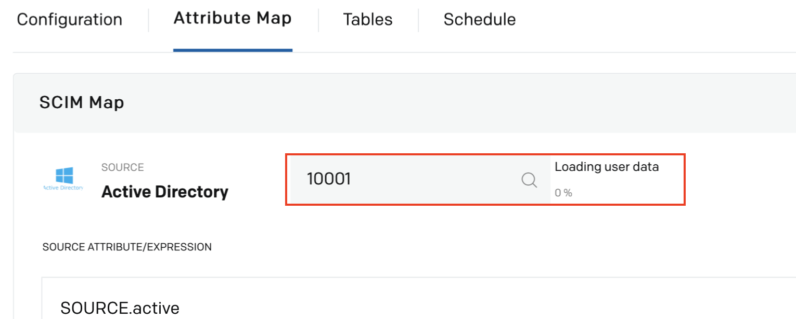
The user data is loaded corresponding to each source attribute. This can be done to ensure that the mapping is done in such a way that the values from the source are mapped to the right target SCIM attributes.
- Search and filter Core, Enterprise, and custom (IAN) attributes from the target attributes list by the attribute name.
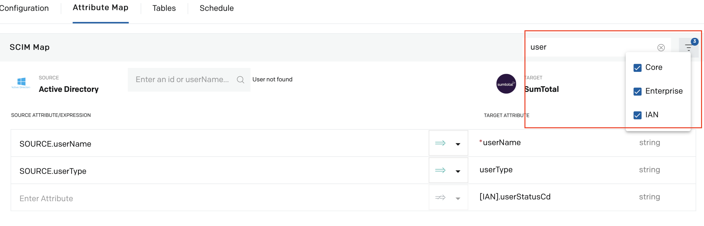
- Set the right mapping option for a source attribute.
You can specify if the mapping of an attribute is to be done for create and update operations, for create operation only, or for update operation only. You can also choose not to map a source SCIM attribute at all.
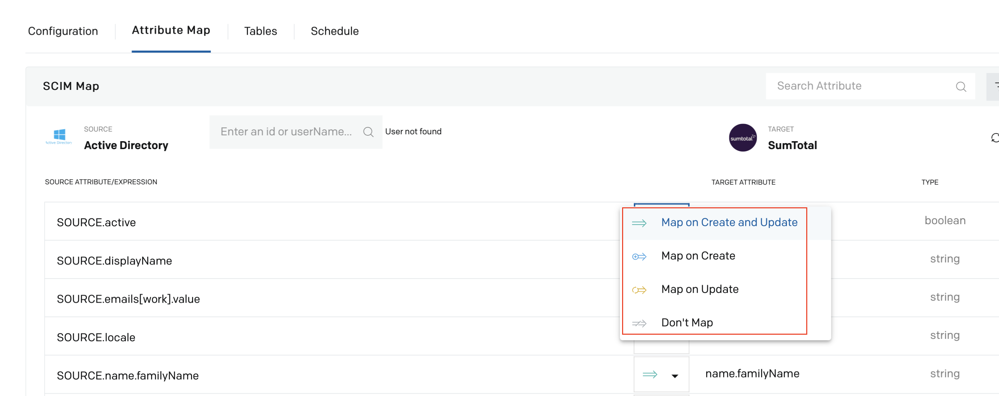
- Click Add Row to Map at the end of the attribute mapping list to add a new row to set an attribute mapping.
- Search for a user from the source application by entering the userId or userName attribute value to get a preview of the values that are mapped to the target attributes.
- Click Save Changes after the source to target attribute mapping is completed.
Using Expressions in Attribute Map
When you set the attribute mapping, you can also write expressions to perform few operations on the attribute values from the source system. These expressions can contain variables, attribute names, methods, and functions. Aquera provides few inbuilt methods and functions that can be used in the expressions.
You can either write the expression directly in the source attribute field or click the Expand icon in the field to write a long expression.
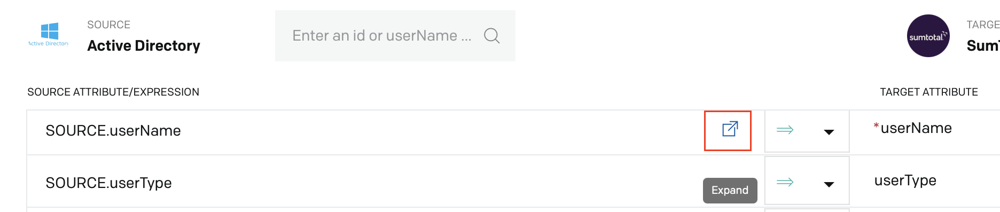
The Edit Expression window is displayed where you can write a long expression.
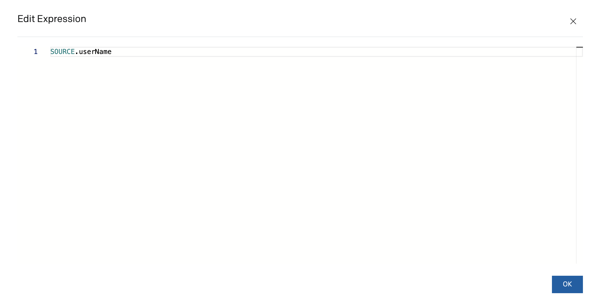
When the orchestration runs, the methods and functions in the expressions are performed on that source attribute's values and the resulting values are updated in the target application.
For details on the keywords, inbuilt methods and functions provided by Aquera, refer to Orchestration - Expressions.
Including Source Attribute Values Using Tables
Tables can be used to create custom source attributes, and POST (sync) them to the target application. Tables are used when a source attribute is empty or a particular data is not sent from the source, and the user wants to update a value to the corresponding target attribute.
Scenario 1
If the hire date of employees is not available in the source attribute and the user wants the hire date to be posted in the target application for all those employees, you can add a table containing the hire date value in the orchestration setup.
- Click the Tables tab. The following page is displayed.

- Click Add Table. The Add Table window is displayed.

- Enter the table name and description as shown in the above screenshot.
The table inputs can be entered either manually as rows or by uploading a CSV file.
- To enter manually, the user can click Add Row.
- To upload the table values using a CSV file, click Upload CSV File. The orchestration supports only .csv file format and the file should have only two columns.
A sample CSV file is attached for your reference. You may edit this file to add the required details and upload it.
In this scenario, we add a table entry by clicking Add Row. The hireDate table is created with the column name as empHireDate and the hire date value as 2020-09-09.
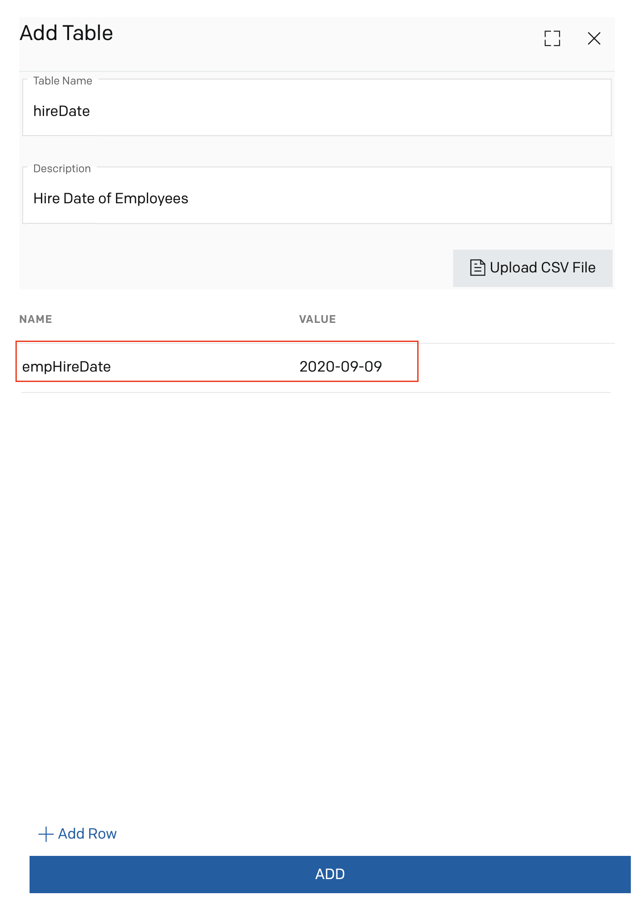
- Click Add. The new table is listed on the page.

- Click Save Changes.
If you want the hire date of all employees to be updated with the value from the table, the expression for the source attribute in the Attribute Map must be given in the format,
TABLE.<table_name>[<column name>]
TABLE.hireDate[empHireDate]
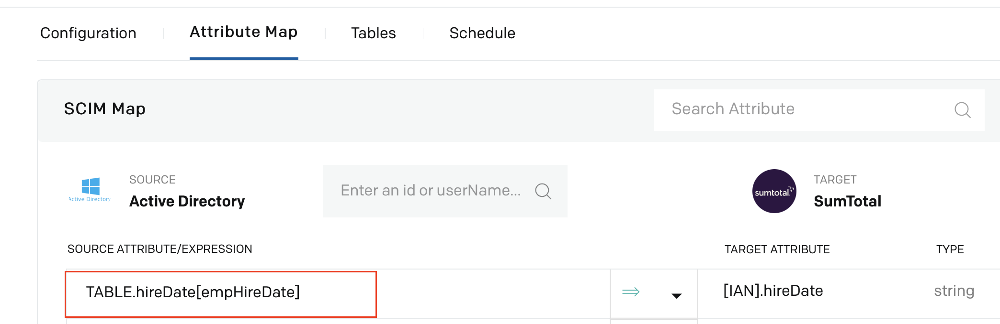
In this case, the hire date of all employees will be updated in the target system with the same date mentioned in the table.
Scenario 2
If the hire date of a particular employee is not available in the source attribute and the user wants the hire date to be posted in the target application, you can add a table in the orchestration setup containing the unique employee number and the corresponding hire date.
- Click the Tables tab. The following page is displayed.
- Click Add Table. The Add Table window is displayed.
- Enter the table name and description as shown in the above screenshot.
The table inputs can be entered either manually as rows or by uploading a CSV file.
- To enter manually, the user can click Add Row.
- To upload the table values using a CSV file, click Upload CSV File. The orchestration supports only .csv file format and the file should have only two columns.
A sample CSV file is attached for your reference. You may edit this file to add the required details and upload it.
In this scenario, we add a table entry by clicking Add Row. The hireDate table is created with the employeeNumber entry as 12345 and the hire date value as 2020-09-09.

- Click Add. The new table is listed on the page.
- Click Save Changes.
Now in the Attribute Map tab, the user wants to post the hire date value of the employee having employeeNumber 12345 from the table to the target attribute [IAN].hireDate. For all other employees, different hire date has to be populated. In this case, to populate the hire date of the specific employee from the table, the corresponding source attribute must be entered as TABLE.hireDate[SOURCE.employeeNumber].
The hiredates of other employees must be populated from the source application. The expression can be given as follows:
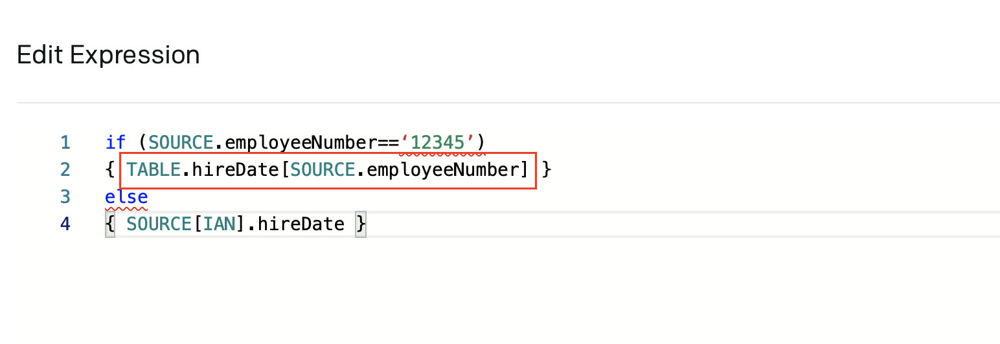
After you run the orchestration, the hire date of the user with employee number 12345 is assigned to the target application from the table.
For details on the keywords, inbuilt methods and functions provided by Aquera, refer to Orchestration - Expressions.
Scheduling the Orchestration Run
You can set the frequency by which the orchestration must run.
- Click the Schedule tab.
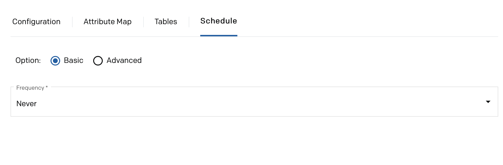
You can either select a basic schedule or set an advanced schedule.
Basic Schedule
You can select a frequency by which the orchestration must run, from a pre-defined list of frequencies ranging from 15 minutes to 24 hours.
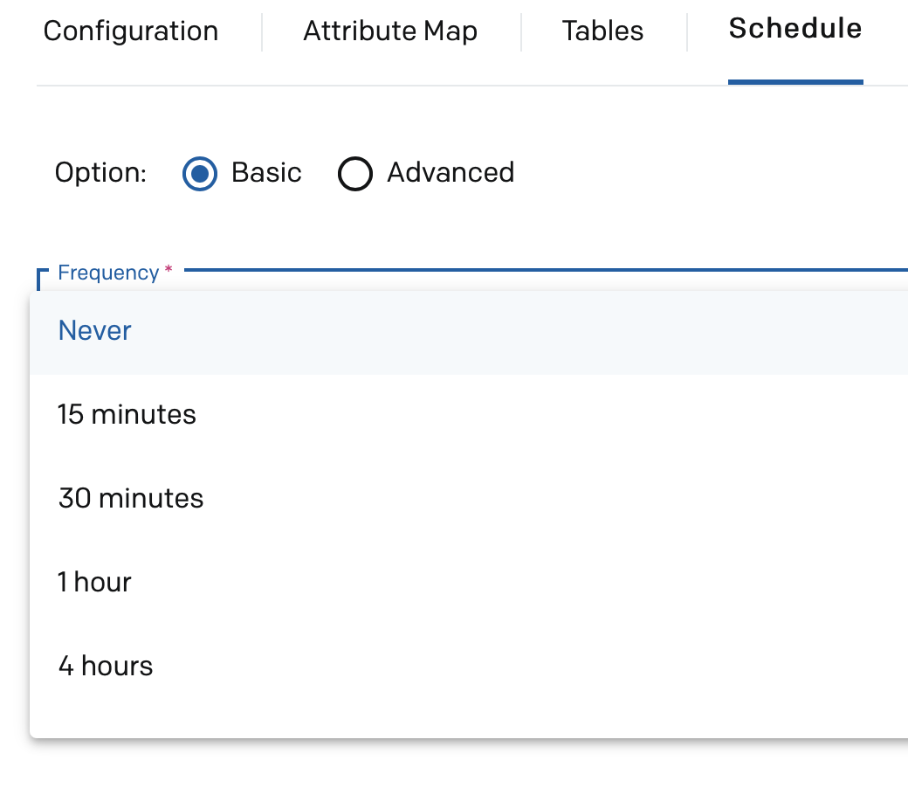
Note: If you select Never, the orchestration never runs.
Advanced Schedule
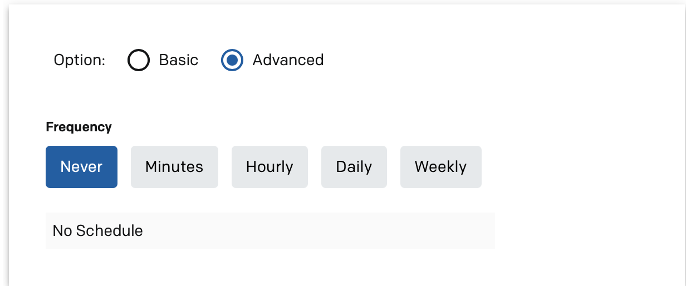
- Select Never if you do not want the orchestration to run on a scheduled basis.
- Select Minutes to schedule the orchestration to run every X minutes, where you need to select X from a drop-down list.
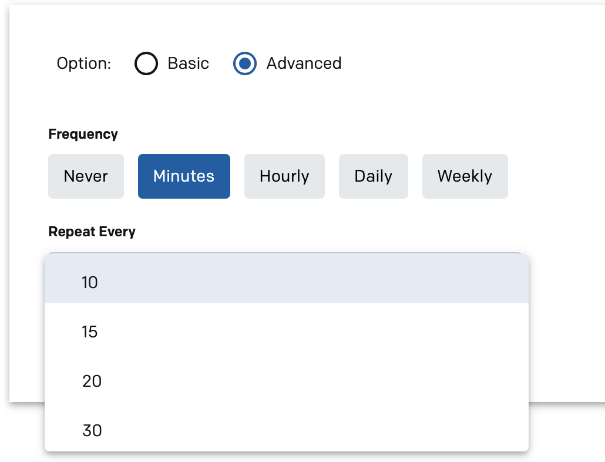
- Select Hourly to schedule the orchestration to run every X hours, where you need to select X from a drop-down list.
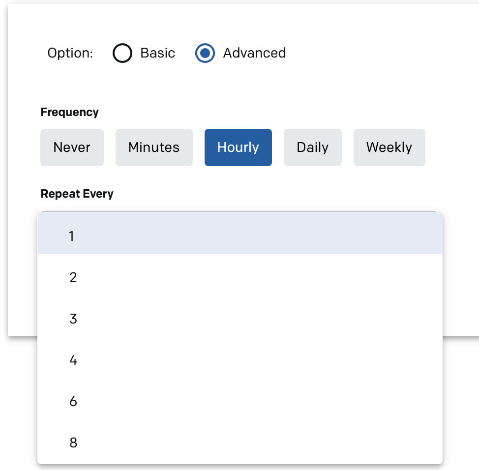
- Select Daily to schedule the orchestration to run every X days at a specific time, where you need to select X and the time from drop down lists. You can set up to a maximum of 5 daily schedules, if required.
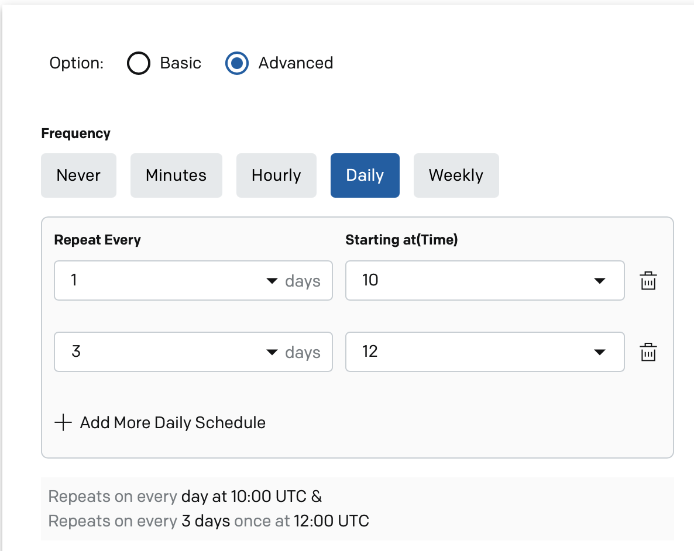
- Select Weekly to schedule the orchestration to run on specific days of a week at a specific time.
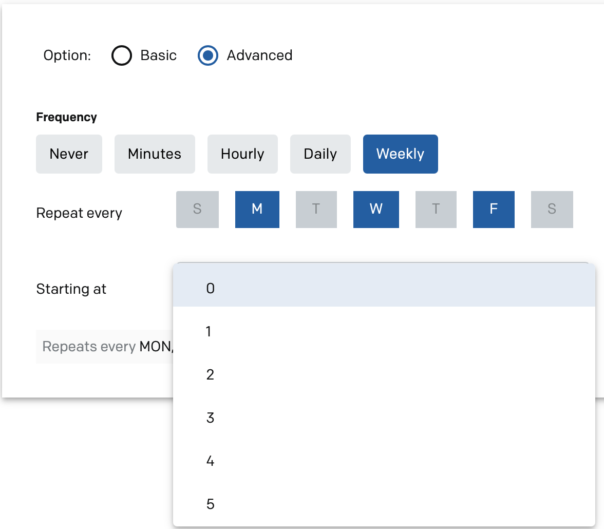
- Click Save Changes to save the orchestration setup.
Appendix
Filtering Data
This section details the syntax of filter expressions that can be entered in the Source SCIM Filter field. It provides information on the various operators that can be provided in the filter expression and the functionality of each operator.
Each expression must contain an attribute name followed by an attribute operator and an optional value.
Multiple expressions may be combined using logical operators. Furthermore, expressions can be grouped together using parenthesis ().
Attribute Operators
The following table lists the various attribute operators that can be used in a filter expression:
| Operator | Description | Behaviour and Example |
| eq | equal |
The attribute and operator value must be identical to meet the filter criterion. userType eq "Admin" |
| ne | not equal |
The attribute and operator value must not be identical to meet the filter criterion. userType ne "Guest" |
| co | contains |
The entire operator value must be a substring of the attribute value for a match. userName co "@domain.com" |
| sw | starts with |
The entire operator value must be a substring of the attribute value, starting at the beginning of the attribute value. urn:ietf:params:scim:schemas:ian:2.0:User:employeeID sw "A" |
| ew | ends with |
The entire operator value must be a substring of the attribute value, matching at the end of the attribute value. userName ew "@domain.com" |
| pr | present (has value) |
If the attribute has a non-empty or non-null value, or if it contains a non-empty node for complex attributes, there is a match. urn:ietf:params:scim:schemas:ian:2.0:User:departmentNumber pr |
| gt | greater than |
If the attribute value is greater than the operator value, there is a match. The actual comparison is dependent on the attribute type. For string attribute types, this is a lexicographical comparison, and for DateTime types, it is a chronological comparison. For integer attributes, it is a comparison by numeric value. This operator cannot be used for Boolean and Binary attributes. urn:ietf:params:scim:schemas:ian:2.0:User:employeeID gt 100 |
| ge | greater than or equal to |
If the attribute value is greater than or equal to the operator value, there is a match. The actual comparison is dependent on the attribute type. For string attribute types, this is a lexicographical comparison, and for DateTime types, it is a chronological comparison. For integer attributes, it is a comparison by numeric value. This operator cannot be used for Boolean and Binary attributes. urn:ietf:params:scim:schemas:ian:2.0:User:employeeID ge 100 |
| lt | less than |
If the attribute value is less than the operator value, there is a match. The actual comparison is dependent on the attribute type. For string attribute types, this is a lexicographical comparison, and for DateTime types, it is a chronological comparison. For integer attributes, it is a comparison by numeric value. This operator cannot be used for Boolean and Binary attributes. urn:ietf:params:scim:schemas:ian:2.0:User:employeeID lt 100 |
| le | less than or equal to |
If the attribute value is less than or equal to the operator value, there is a match. The actual comparison is dependent on the attribute type. For string attribute types, this is a lexicographical comparison, and for DateTime types, it is a chronological comparison. For integer attributes, it is a comparison by numeric value. This operator cannot be used for Boolean and Binary attributes. urn:ietf:params:scim:schemas:ian:2.0:User:employeeID le 100 |
Logical Operators
The logical operators are used to combine multiple expressions. The following table lists the various logical operators that can be used in a filter expression:
| Operator | Description | Behaviour and Example |
| and | Logical AND |
The filter is a match only if both the expressions (criteria) are met. userType ne "Guest" and urn:ietf:params:scim:schemas:ian:2.0:User:employeeID pr |
| or | Logical OR |
The filter is a match if either of the expressions (criteria) is met. userType ne "Guest" or urn:ietf:params:scim:schemas:ian:2.0:User:employeeID gt 100 |
| not | NOT function |
The filter is a match if the expression evaluates to false. userType eq "Admin" and not (userName co "example.com" or urn:ietf:params:scim:schemas:ian:2.0:User:employeeID le 100) |
Note: not takes precedence over and, which takes precedence over or.
Grouping Operators
| Operator | Description | Behaviour and Example |
| () | Precedence Grouping |
Boolean expressions may be grouped using parentheses to change the standard order of operations, that is, to evaluate logical or operators before logical and operators. userType eq "Admin" and not (userName co "example.com" or urn:ietf:params:scim:schemas:ian:2.0:User:employeeID le 100) |
| [] | Complex attribute filter grouping |
Complex filters are supported where expressions must be applied to the same value of a parent attribute specified immediately before the left square bracket ("["). The expression within square brackets ("[" and "]") must be a valid filter expression based upon sub-attributes of the parent attribute. Nested expressions may be used. emails[type eq "work" and value co "@example.com"] or ims[type eq "xmpp" and value co "@foo.com"] |
Using Data Values
The filter expression may include optional values. The following table shows how values of different data types must be used in a filter expression.
| Type of Data | Usage of Value in Filter Expression |
| Text | Use the value within double quotes. For example, "John" |
| Number | Use the value without quotes. For example, 100 |
| Date and Time | Use the value within double quotes. For example, "2011-05-13T04:42:34Z" |
| Boolean | Use true or false without any quotes. For example, true |
| Null value | Use null without quotes. |